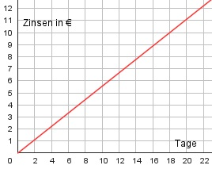

Lineare Funktionen Aufgabe 92 Ein Unternehmer hat 5000 € zu 4% angelegt. a) Wie lautet die Funktionsgleichung für die Zinsen Z abhängig von der Anzahl der Tage T? b) Wie lautet die Funktionsgleichung für das angewachsene Kapital K1 abhängig von der Anzahl der Tage T? c) Nach wie viel Tagen beträgt der Zins 10 €? a) K * p * T 5000 * 4 5 Z = ------------- = ------------- * T = gekürzt --- * T 100 * 360 100 * 360 9  b) 5 K1 = K0 + Z = 5000 + --- * T 9 c) 5 10 = --- * T |*9 9 90 = 5 * T |:5 T = 18 Tage